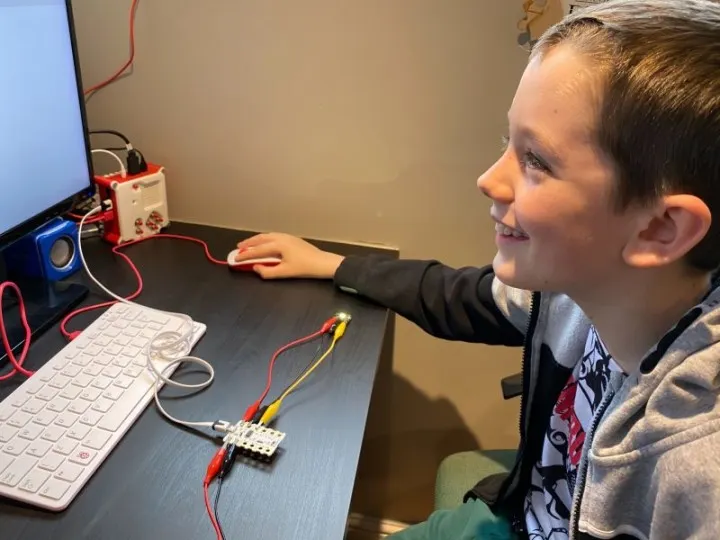
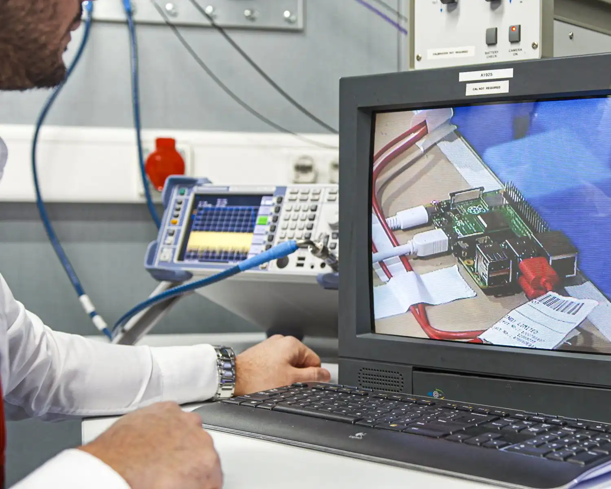

Docs
Documentazione
Guide ufficiali, pinout GPIO e riferimento API per tutti i modelli Pi.
Alla documentazione →
Community
Forum della community
Migliaia di membri attivi ti aiutano. Nessuna domanda è troppo piccola o grande.
Al forum →
domande frequenti
FAQ
Controlla l'alimentatore. Per Pi 4 serve 5V/3A. Per Pi 5 serve 5V/5A. La SD card è inserita bene? È stata flashata con Pi Imager?
In Pi Imager: abilita SSH prima di flashare. Oppure crea un file vuoto chiamato "ssh" nella partizione boot. Poi connettiti con: ssh pi@indirizzo-IP
Apri il terminale e scrivi: sudo apt update && sudo apt full-upgrade -y — poi riavvia: sudo reboot. Aggiorna spesso per sicurezza.
Il Pi 5 può arrivare a 80°C. Il throttling inizia a 85°C. Usa il raffreddatore attivo ufficiale. È normale sotto carico pesante.
Minimo Class 10 / UHS-I con rating A1 o A2. Consigliata: SanDisk Extreme o Samsung PRO Endurance. Per Pi 5: SSD NVMe tramite M.2 HAT.
Modifica /etc/dhcpcd.conf o usa nmtui nel terminale → "Modifica connessione" → IPv4 su "Manuale". Poi riavvia.
Windows 11 ARM funziona su Pi 4/5 con WoA Installer. Ma è lento. Meglio usare Raspberry Pi OS, Ubuntu 24.04 o Fedora.
In Pi Imager metti i dati Wi-Fi prima di flashare. Oppure dopo il primo avvio: sudo raspi-config → System Options → Wireless LAN.
aiuto diretto